¿Qué es la IBA?
Reconocido oficialmente por la IBA (Asociación Internacional de Bartenders) como el cóctel clásico representativo de Hungría. Su nombre honra la gran llanura húngara (puszta) y combina varios licores de fruta típicamente húngaros.
RECETA
- 40 ml pálinka
- 20 ml vermut dulce
- 20 ml jugo de naranja
- 10 ml jugo de limón
- 10 ml jarabe simple
- Hielo
- 1 limón amarillo
- Agrega todos los ingredientes a una coctelera con hielo.
- Agita bien y cuela en una copa fría.
- decorar con un twist y/o gajo de limón amarillo
Vaso: Copa coctél